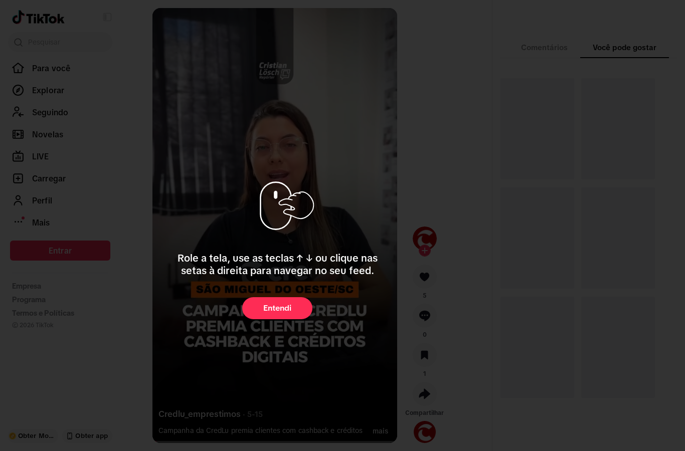
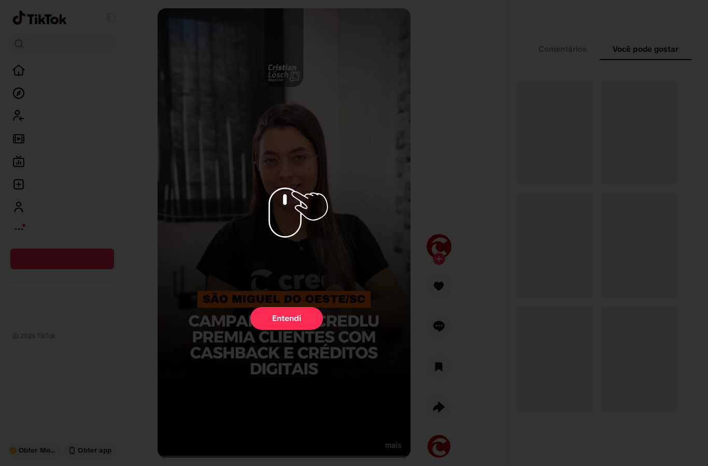

Sistema de Investigação de Marca e Identidade Online
https://www.tiktok.com/@credlu_emprestimos/video/7640116575726538004
Prioridade: MEDIUM · Cenário: B_AMBIGUOUS_COMMUNICATION · Revisão humana: PENDING
Trata-se de uma publicação de promotora de crédito (CredLu Empréstimos) divulgando campanha de financiamento de veículos e cashback com conta digital do Banco BV. Embora a identidade própria predomine sem falsa atribuição de canal oficial, faltam os elementos de transparência regulatória exigidos pela Resolução CMN nº 4.935/2021 (declaração expressa de correspondente bancário, CNPJ e ouvidoria), enquadrando-se em comunicação ambígua que requer revisão. [Revisor: CONFIRM] A publicação em rede social pertence a uma promotora de crédito/correspondente comercial (CredLu Empréstimos) promovendo financiamento e conta digital em parceria com o Banco BV. Embora mantenha identidade própria visível sem simular canal oficial, omite os avisos obrigatórios da Resolução CMN nº 4.935/2021 (declaração formal de correspondente, CNPJ/razão social completa e contato da ouvidoria do banco), caracterizando parceria com vínculo regulatório não esclarecido. Mantém-se REVIEW_REQUIRED conforme as diretrizes.


| Ref | Tipo | Local | Conteúdo |
|---|---|---|---|
| E-URL | domain | url | URL final: https://www.tiktok.com/@credlu_emprestimos/video/7640116575726538004 (domínio: www.tiktok.com) |
| E-COLLECT | network | collection | Status da coleta: OK; HTTP 200; ocorrências: network did not become idle (continuing) |
| E-DISC-001 | text | search_index | Índice de busca (grounding): www. tiktok . com › @credlu_emprestimos › video Campanha da CredLu premia clientes com cashback e créditos ... |
| E-SHOT-VIEWPORT | screenshot | viewport | evidence/C35857fd054/attempt-1/viewport.png (sha256 2b13a9ee5889fddb…) |
| E-SHOT-FULL | screenshot | page | evidence/C35857fd054/attempt-1/fullpage.png (sha256 5f2a191aa8583cc0…) |
| E-TITLE | title | head | Campanha da CredLu premia clientes com cashback e créditos digitais 🤝... | TikTok |
| E-META-1 | meta | head | description: Vídeo do TikTok de Credlu_emprestimos (@credlu_emprestimos): "Campanha da CredLu premia clientes com cashback e créditos digitais 🤝 A CredLu iniciou, durante o mês de maio, uma campanha promocional em parceria com o banco BV voltada para clientes que realizarem operações de financiamento ou refinanciamento de veículos leves e pesados. Segundo a empresária Luciane Groth, a ação permite que clientes recebam benefícios diretamente na conta digital BV, com premiações que podem chegar a R$ 1 mil. D |
| E-META-2 | meta | head | og:site_name: TikTok |
| E-META-3 | meta | head | og:title: Credlu_emprestimos no TikTok |
| E-META-4 | meta | head | og:description: Campanha da CredLu premia clientes com cashback e créditos digitais 🤝 A CredLu iniciou, durante o mês de maio, uma campanha promocional em parceria com o banco BV voltada para clientes que realizarem operações de financiamento ou refinanciamento de veículos leves e pesados. Segundo a empresária Luciane Groth, a ação permite que clientes recebam benefícios diretamente na conta digital BV, com premiações que podem chegar a R$ 1 mil. De acordo com a campanha, ao abrir a conta digital BV e realiza |
| E-CANONICAL | meta | head | https://www.tiktok.com/@credlu_emprestimos/video/7640116575726538004 |
| E-FOLD | text | viewport (acima da dobra) | Pesquisar Para você Explorar Seguindo Novelas LIVE Carregar Perfil Mais Entrar Empresa Programa Termos e Políticas © 2026 TikTok Obter Moedas Obter app Credlu_emprestimos · 5-15 Campanha da CredLu premia clientes com cashback e créditos digitais 🤝 A CredLu iniciou, durante o mês de maio, uma campanha promocional em parceria com o banco BV voltada para clientes que realizarem operações de financiamento ou refinanciamento de veículos leves e pesados. mais 5 0 1 Compartilhar Comentários Você pode gostar Role a tela, use as teclas ↑ ↓ ou clique nas setas à direita para navegar no seu feed. Entendi |
| E-CTA-1 | cta | page | Pesquisar |
| E-CTA-2 | cta | page | Para você |
| E-CTA-3 | cta | page | Explorar |
| E-CTA-4 | cta | page | Seguindo |
| E-CTA-5 | cta | page | Novelas |
| E-CTA-6 | cta | page | LIVE |
| E-CTA-7 | cta | page | Carregar |
| E-CTA-8 | cta | page | Perfil |
| E-CTA-9 | cta | page | Mais |
| E-CTA-10 | cta | page | Entrar |
| E-CTA-11 | cta | page | Obter Moedas |
| E-CTA-12 | cta | page | Obter app |
| E-CTA-13 | cta | page | mais |
| E-CTA-14 | cta | page | Comentários |
| E-CTA-15 | cta | page | Você pode gostar |
| E-CTA-16 | cta | page | Entendi |
| E-IMG-1 | image | page (acima da dobra) | imagem alt='Campanha da CredLu premia clientes com cashback e créditos digitais 🤝 A CredLu iniciou, durante o mês de maio, uma campanha promocional em parceria com o banco BV voltada para clientes que realizare' src=https://p16-common-sign.tiktokcdn.com/tos-alisg-p-0037/oMpFECB8QIVpwVK13f5jOQyYq30SzDfZBCEgAB~tplv-tiktokx-origin.image?dr=14575&x-expires=1795806000&x-signature=AW%2FaMpnZIg4H3T9rqMIvPO7%2B%2Fy8%3D&t (488x868, acima da dobra) |
| E-TXT-001 | text | page | Campanha da CredLu premia clientes com cashback e créditos digitais 🤝A CredLu iniciou, durante o mês de maio, uma campanha promocional em parceria com o banco BV voltada para clientes que realizarem operações de financiamento ou refinanciamento de veículos leves e pesados.Segundo a empresária Luciane Groth, a ação permite que clientes recebam benefícios diretamente na conta digital BV, com |
| E-TXT-002 | text | page | premiações que podem chegar a R$ 1 mil.De acordo com a campanha, ao abrir a conta digital BV e realizar o primeiro débito automático da parcela diretamente nela, o cliente já garante R$ 200 de cashback. Além disso, outras bonificações e benefícios podem ser acumulados ao longo da promoção, aumentando o valor total recebido.A empresária destaca ainda a rapidez nas aprovações e liberações. Em |
| E-TXT-003 | text | page | alguns casos, clientes conseguiram realizar todo o processo de forma online e ter o valor disponível na conta no mesmo dia, poucas horas após o início da contratação.A promoção é válida tanto para atendimentos presenciais nas unidades da CredLu quanto para operações feitas de maneira digital, oferecendo mais praticidade e menos burocracia para quem busca crédito veicular.A CredLu reforça que |
| E-TXT-004 | text | page | segue ampliando suas soluções financeiras, mantendo foco em agilidade, transparência e atendimento próximo aos clientes.Mais informações podem ser obtidas diretamente pelo WhatsApp da CredLu: (49) 98401-7708.#video #conteudo #informação #trabalho |
| Dimensão | Sinal | Achado | Refs |
|---|---|---|---|
| VISUAL_IDENTITY | LEGITIMATE | Identidade visual própria da promotora CredLu predomina no vídeo e no perfil social, sem apropriação visual indevida de elementos institucionais do Banco BV. | E-SHOT-VIEWPORT E-SHOT-FULL |
| DECLARED_COMMERCIAL_IDENTITY | NEUTRAL | A entidade se identifica como CredLu / CredLu Empréstimos, mencionando a cidade de São Miguel do Oeste/SC e a empresária Luciane Groth, porém sem informar CNPJ. | E-SHOT-VIEWPORT E-TXT-001 E-TXT-004 |
| CORRESPONDENT_TRANSPARENCY | CONFUSION | Inexistência da declaração explícita de correspondente bancário e ausência de contato de ouvidoria da instituição financeira parceira. | E-TXT-001 E-TXT-003 E-TXT-004 |
| INSTITUTIONAL_LANGUAGE | NEUTRAL | Linguagem promocional de parceria comercial ('em parceria com o banco BV') para financiamento de veículos e conta digital. | E-TXT-001 E-TXT-002 |
| LOGO_USAGE | NEUTRAL | Apenas menção textual ao Banco BV no texto da publicação, sem uso ostensivo de logotipos do banco no vídeo analisado. | E-SHOT-VIEWPORT E-TXT-001 |
| SERVICE_JOURNEY | NEUTRAL | Intermediação de crédito de veículos leves e pesados com abertura de conta digital BV e atendimento via WhatsApp da CredLu. | E-TXT-001 E-TXT-002 E-TXT-004 |
| CONTACT_CHANNELS | NEUTRAL | Canal de contato direto via WhatsApp comercial próprio da CredLu informado na postagem. | E-TXT-004 |
| CONSUMER_CONFUSION | NEUTRAL | Apesar de deixar claro que é uma campanha da CredLu em parceria com o banco, a ausência de termos regulatórios e CNPJ dificulta a verificação da regularidade da intermediação. | E-TXT-001 E-TXT-004 |
Trata-se de uma publicação de promotora de crédito (CredLu Empréstimos) divulgando campanha de financiamento de veículos e cashback com conta digital do Banco BV. Embora a identidade própria predomine sem falsa atribuição de canal oficial, faltam os elementos de transparência regulatória exigidos pela Resolução CMN nº 4.935/2021 (declaração expressa de correspondente bancário, CNPJ e ouvidoria), enquadrando-se em comunicação ambígua que requer revisão.
Nenhum CNPJ ou razão social identificáveis no conteúdo coletado.
| Tipo | Valor | Ref | Contexto |
|---|---|---|---|
| domain | tiktok.com | E-URL | |
| social_profile | https://www.tiktok.com/@credlu_emprestimos/video/7640116575726538004 | E-URL | |
| phone | (49) 98401-7708 | E-TXT-004 | |
| partnership_declaration | em parceria com | E-META-1 | description: Vídeo do TikTok de Credlu_emprestimos (@credlu_emprestimos): "Campanha da CredLu premia clientes com cashback e créditos digitais 🤝 A CredLu iniciou, durante o mês de maio, uma campanha p |
Mapeamento indicativo para apoio à auditoria. Não constitui conclusão regulatória; a decisão definitiva pertence à auditoria.
Fonte: NORMATIVE
Art. 14. O contrato de correspondente deve estabelecer: [...] II - vedação à utilização, pelo contratado, de logomarca ou de outros atributos que sejam similares aos adotados pela instituição contratante em suas agências, postos de atendimento, sítio eletrônico na internet, aplicativo ou outras plataformas de comunicação em rede;
Evidência observada: E-SHOT-FULL E-SHOT-VIEWPORT
Fonte: NORMATIVE
Art. 14. O contrato de correspondente deve estabelecer: [...] III - divulgação ao público, pelo contratado, de sua condição de prestador de serviços à instituição contratante, identificada pelo nome com que é conhecida no mercado, com descrição dos produtos e serviços oferecidos e canais de contato da instituição contratante, inclusive de sua ouvidoria, em local visível, em destaque e em formato legível, por meio de: a) sítio eletrônico do correspondente na internet, acessível na página inicial; b) aplicativo e outras plataformas de comunicação em rede do correspondente; [...]
Hipótese: Divulgação ao público da condição de prestador de serviços/parceria ausente, insuficiente, ambígua ou sem destaque. A norma disciplina correspondentes contratados; o responsável não foi identificado como correspondente.
Evidência observada: E-TXT-001 E-TXT-002 E-TXT-003 E-TXT-004
Informação faltante:
Fonte: NORMATIVE
Art. 3º O correspondente atua por conta e sob as diretrizes da instituição contratante, que assume inteira responsabilidade pelo atendimento prestado aos clientes e usuários por meio do contratado.
Evidência observada: —
Se o responsável não for correspondente contratado, os indícios podem caracterizar uso indevido de marca ou fraude, fora do escopo da Res. 4.935: avaliar encaminhamento às áreas jurídica/segurança.
Limitações: requisitos contratuais/internos não fornecidos: mapeamento limitado ao texto normativo
Decisão: CONFIRM → REVIEW_REQUIRED / MEDIUM
A publicação em rede social pertence a uma promotora de crédito/correspondente comercial (CredLu Empréstimos) promovendo financiamento e conta digital em parceria com o Banco BV. Embora mantenha identidade própria visível sem simular canal oficial, omite os avisos obrigatórios da Resolução CMN nº 4.935/2021 (declaração formal de correspondente, CNPJ/razão social completa e contato da ouvidoria do banco), caracterizando parceria com vínculo regulatório não esclarecido. Mantém-se REVIEW_REQUIRED conforme as diretrizes.
| Tema | Severidade | Questionamento | Refs |
|---|---|---|---|
| domain_attribution | MEDIUM | Responsável pela página não identificado; a conclusão sobre a marca não pode ser atribuída a um estabelecimento específico. | E-URL |
| Fonte | Consulta / hipótese | URL original | Título / trecho |
|---|---|---|---|
| grounding | site:tiktok.com ("Banco BV" OR "bv financeira") financiamento -inurl:/@bancobv -inurl:/discover/ H6-platform:TikTok-LinkedIn | https://www.tiktok.com/@credlu_emprestimos/video/7640116575726538004 | www. tiktok . com › @credlu_emprestimos › video Campanha da CredLu premia clientes com cashback e créditos ... |
Original: https://www.tiktok.com/@credlu_emprestimos/video/7640116575726538004
Final: https://www.tiktok.com/@credlu_emprestimos/video/7640116575726538004
| Artefato | Caminho | SHA-256 | Bytes |
|---|---|---|---|
| screenshot_viewport | evidence/C35857fd054/attempt-1/viewport.png | 2b13a9ee5889fddba3ada74933d2f3302dc67228238ff5f42130d600f2641de7 | 259687 |
| screenshot_full | evidence/C35857fd054/attempt-1/fullpage.png | 5f2a191aa8583cc073ee9cc33adcf39b85ed3abaaf579bb856d27529171cb65c | 236763 |
| html | evidence/C35857fd054/attempt-1/page.html.txt | eba47ef6cecfcc7859e204414948a57454a439edb21a13d829918de1e07a541e | 592262 |
| text | evidence/C35857fd054/attempt-1/text.txt | 6376c8e14418593d52ccf67d6115619642e7217832bd3fef53682629ecccbb2e | 1842 |
| page_data | evidence/C35857fd054/attempt-1/page.json | 8e2ba3793c65a57f547157537826ca72796194767d8d16bdf886a374cbbb2b00 | 9378 |
| Quando | De | Para | Nota |
|---|---|---|---|
| 2026-11-25T18:12:13+00:00 | DISCOVERED | QUEUED | prioritised (score 0.0) |
| 2026-11-25T19:40:41+00:00 | QUEUED | COLLECTING | |
| 2026-11-25T19:40:50+00:00 | COLLECTING | COLLECTED | |
| 2026-11-25T19:40:50+00:00 | COLLECTED | ANALYZING | |
| 2026-11-25T19:41:07+00:00 | ANALYZING | REVIEWING | |
| 2026-11-25T19:41:14+00:00 | REVIEWING | COMPLETED |